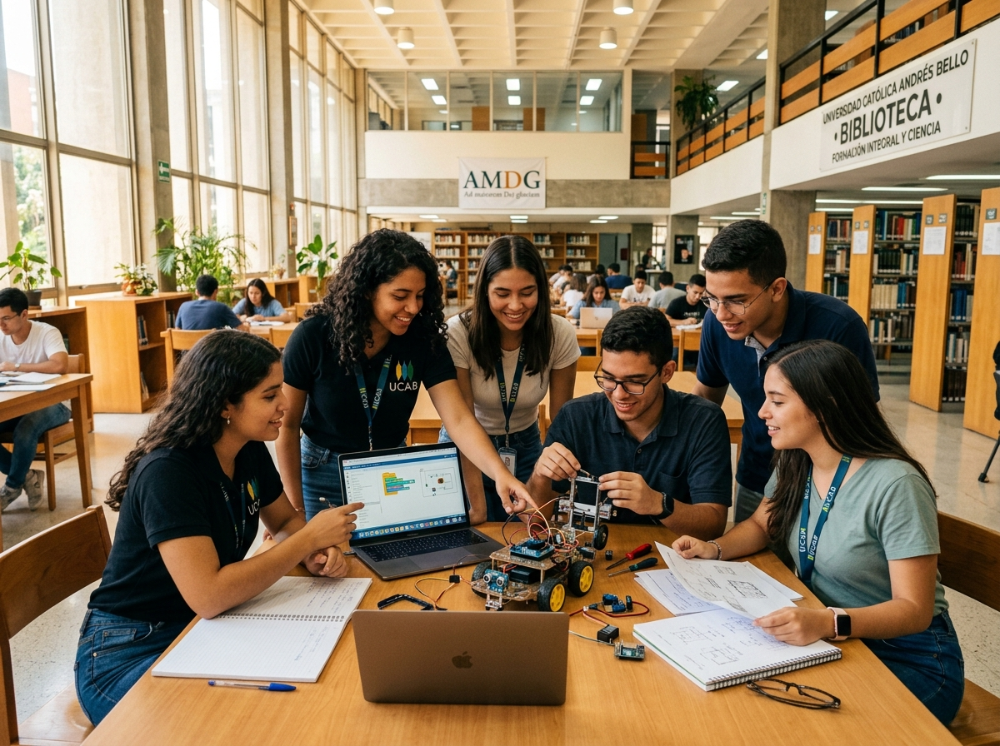

Sector Educación

Educación Superior y Escolar
La Universidad Católica Andrés Bello (UCAB), el IUJO y la red de Colegios Ignacianos forman profesionales con sólida ética y excelencia humana.
Ver instituciones educacionales